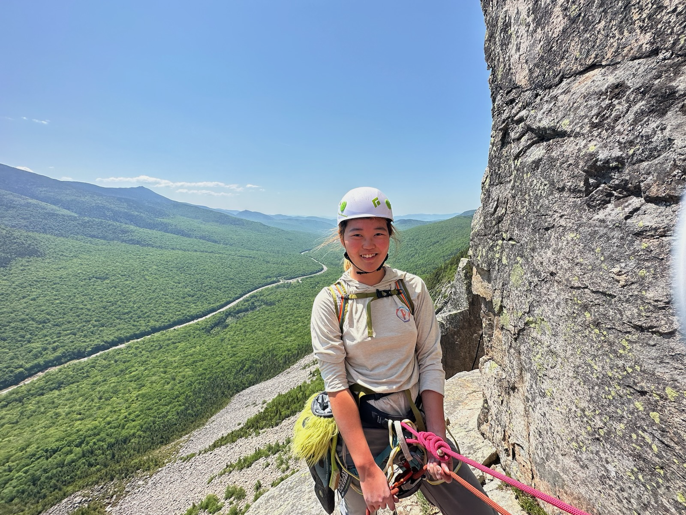

I am a master student majoring in Computer Science at the University of Virginia. I am interested in full stack software development and deep learning. Other than writing code I am a climber, you can find me in the wild in my tevas year around.
I have experience in both full stack development and deep learing. In one of my personal projects, I built online shopping distribute system with Spring boot and Spring MVC, handle Prime Day Sale event up to 100K QPS traffic. I have also worked on a project named KeyFinder aimed to make keyboard shortcuts more accessible to computer users. Professionally, I have worked as a software engineer intern and developed a pipeline to train a model on synthetic data for bin-picking task. In the other internship, I worked as a machine learning engineer intern and experimented on improving path planning task with a neural network.
More details on my projects and industry experience can be found in my Resume page. An overview of my skills can be found in my Skills page.
I am also an active climber, I am fairly new to climbing but I have climbed in many worldclass crags. Including the new river gorge, the red river gorge, runmney etc. I am super passionate about climbing and am working on my trad climbing skillsets, if you want to see more of my climbing life, you can find a record of me in the wild climbing in my Found In The Wild page.
Currently, I am looking for full time entry level software engineer position. You can reach me through my email: qvw9pv@virginia.edu or my phone: 4349958650. More contact information can be found in my Contact page. As well as links to my other social media, including my linkedin, github, etc.